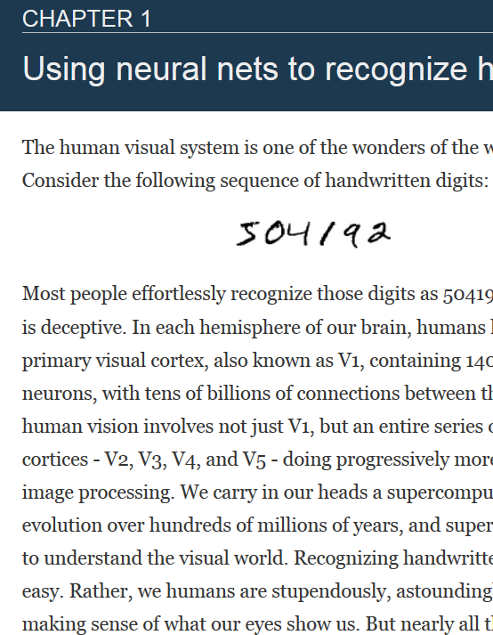
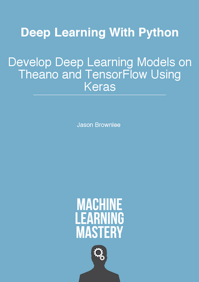
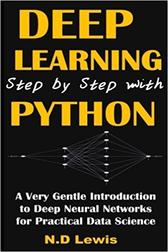
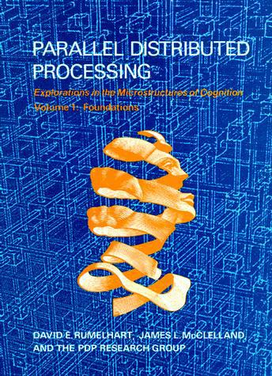

Documentation and Tools
Textbooks





Information to fall students: There have been questions about the comparison of 11-785 to 10-617, also named “Introduction to deep learning.” The two are not the same course. The conflicting names were an error, and based on content, 10-617/417 is now being renamed “Intermediate DL”. Ruslan and I recommend that students without significant prior experience of DL first take 785/485; on the other hand if you have prior experience and are looking for more of the theoretical background, you take 617. Taking 785 followed by 617 would, in fact, be a natural progression of courses in a curriculum.
“Deep Learning” systems, typified by deep neural networks, are increasingly taking over all AI tasks, ranging from language understanding, and speech and image recognition, to machine translation, planning, and even game playing and autonomous driving. As a result, expertise in deep learning is fast changing from an esoteric desirable to a mandatory prerequisite in many advanced academic settings, and a large advantage in the industrial job market.
In this course we will learn about the basics of deep neural networks, and their applications to various AI tasks. By the end of the course, it is expected that students will have significant familiarity with the subject, and be able to apply Deep Learning to a variety of tasks. They will also be positioned to understand much of the current literature on the topic and extend their knowledge through further study.
Petr Ermakov and Artem Trunov are mirroring the course at OpenDataScience (ODS.ai). The mirrored course follows the CMU course in its entirety, quizzes, homeworks, piazza, discussion boards and all, and runs roughtly 3 weeks behind the CMU schedule. . There are currently about 1300 students signed up for it. If you are interested in the full course experience, you too can sign up for it at this site.
If you are only interested in the lectures, you can watch them on the YouTube channel listed below.
The course is well rounded in terms of concepts. It helps us understand the fundamentals of Deep Learning. The course starts off gradually with MLPs and it progresses into the more complicated concepts such as attention and sequence-to-sequence models. We get a complete hands on with PyTorch which is very important to implement Deep Learning models. As a student, you will learn the tools required for building Deep Learning models. The homeworks usually have 2 components which is Autolab and Kaggle. The Kaggle components allow us to explore multiple architectures and understand how to fine-tune and continuously improve models. The task for all the homeworks were similar and it was interesting to learn how the same task can be solved using multiple Deep Learning approaches. Overall, at the end of this course you will be confident enough to build and tune Deep Learning models.
Instructor: Bhiksha Raj
TAs:
* -- contingent on registration
Lecture: Monday and Wednesday, 9.00am-10.20am
Location: Baker Hall A51
Recitation: Friday, 9.00am-10.20am
Location: Baker Hall A51
Office hours:
This course is worth 12 units.
Grading will be based on weekly quizzes (24%), homeworks (51%) and a course project (25%).
| Policy | ||
| Quizzes | There will be weekly quizzes.
|
|
| Assignments | There will be five assignments in all. Assignments will include autolab components, where you must complete designated tasks, and a kaggle component where you compete with your colleagues.
| |
| Project | All students are required to do a course project. The project is worth 25% of your grade | |
| Final grade | The end-of-term grade is curved. Your overall grade will depend on your performance relative to your classmates. | |
| Pass/Fail | Students registered for pass/fail must complete all quizzes, HWs and the project. A grade equivalent to B- is required to pass the course. | |
| Auditing | Auditors are not required to complete the course project, but must complete all quizzes and homeworks. We encourage doing a course project regardless. |
The course will not follow a specific book, but will draw from a number of sources. We list relevant books at the end of this page. We will also put up links to relevant reading material for each class. Students are expected to familiarize themselves with the material before the class. The readings will sometimes be arcane and difficult to understand; if so, do not worry, we will present simpler explanations in class.
We will use Piazza for discussions. Here is the link. You should be automatically signed up if you're enrolled at the start of the semester. If not, please sign up.
You can also find a nice catalog of models that are current in the literature here. We expect that you will be in a position to interpret, if not fully understand many of the architectures on the wiki and the catalog by the end of the course.
Kaggle is a popular data science platform where visitors compete to produce the best model for learning or analyzing a data set.
For assignments you will be submitting your evaluation results to a Kaggle leaderboard.
All recitations and lectures will be recorded and uploaded to Youtube. Here is a link to the Youtube channel. Links to individual lectures and recitations will also be posted below as they are uploaded. All videos for the Spring 2019 edition are tagged “S19”. CMU students can also access the videos on Panopto from this link.
| Lecture | Date | Topics | Lecture notes/Slides | Additional readings, if any | Quizzes/Assignments | Shadow Instructor |
|---|---|---|---|---|---|---|
| 0 | - |
|
Slides Video |
Cody Smith | ||
| 1 | January 14 |
|
Slides Video |
Assignment 0 due on January 20. |
||
| 2 | January 18 |
|
Slides Video |
|||
| 3 | January 23 |
|
Slides Video |
Assignment 1 released on January 24. | Cody Smith | |
| 4 | January 28 |
|
Slides Video |
Cody Smith | ||
| 5 | January 30 |
|
Slides Video |
|||
| 6 | February 4 |
|
Slides Video |
|||
| 7 | February 6 |
|
Slides Video |
|||
| 8 | February 11 |
|
Slides Video |
Daanish Ali Khan, Hengrui Liu | ||
| 9 | February 13 |
|
Slides Video |
Assignment 1 due on February 16 Assignment 2 released on February 17. |
Sarvesh D., Hengrui Liu | |
| 10 | February 18 |
|
Slides Video |
|
Simral Chaudhary, Daanish Ali Khan | |
| 11 | February 20 |
|
Slides Video |
Simral Chaudhary, Sarvesh D. | ||
| 12 | February 25 |
|
Slides Video |
How to compute a derivative | ||
| 13 | February 27 |
|
Slides Video |
Cascade-Correlation | ||
| 14 | March 4 |
|
Slides Video |
Superposition of many models into one | ||
| 15 | March 6 |
|
Slides Video |
|||
| 15 | March 8 |
|
Slides Video |
|||
| 16 | March 18 |
|
Slides Video |
Assignment 2 due on March 10. Assignment 3 released on March 10. |
||
| 17 | March 20 |
|
Slides Video |
|||
| 18 | March 25 |
|
Slides Video |
|||
| 19 | March 27 |
|
Slides Video |
|||
| 20 | April 1 |
|
Slides Video |
Assignment 3 due on March 31. | ||
| 21 | April 3 |
|
Assignment 4 released on April 1. |
|||
| 22 | April 8 |
|
Slides Video |
|||
| 23 | April 10 |
|
Slides Video |
Chia-Wei | ||
| 24 | April 15 |
|
Video Slides |
Chia-Wei | ||
| 25 | April 17 |
|
Video Slides |
|||
| 26 | April 22 |
|
Slides Video |
|||
| 27 | April 24 |
|
Slides Video |
|||
| 28 | April 29 |
|
Slides Video |
Assignments 4 due on April 28. | ||
| 29 | May 1 |
|
Slides Video |
| Recitation | Date | Topics | Lecture notes/Slides | Notebook | Videos | Instructor |
|---|---|---|---|---|---|---|
| 0 - Part 1 | January 2 | Python coding for the deep learning student | Notebook | Part 1 video |
Simral Chaudhary, Sarvesh D. |
|
| 0 - Part 2 | January 2 | Python coding for the deep learning student | Notebook | Part 2 video | Simral Chaudhary, Sarvesh D. |
|
| 1 | January 16 | Amazon Web Services (AWS) |
Slides |
Video | David Bick, Cody Smith | |
| 2 | January 25 | Your First Deep Learning Code | Slides | Video | Alex Litzenberger, Daanish Ali Khan | |
| 3 | February 1 | Efficient Deep Learning/Optimization Methods | Slides | Notebook | Video | Kai Hu, Cody Smith, Josh Movenzadeh |
| 4 | February 8 | Debugging and Visualization | Slides | Notebook | Video | Raphael Olivier, Sarvesh D. |
| 5 | February 15 | Convolutional Neural Networks | Slides | Notebook | Video | Simral Chaudhary, Hengrui Liu, William Hu |
| 6 | February 22 | CNNs: HW2 | Slides |
Notebook | Video | Hira Dhamyal, Hengrui Liu, Sarvesh D. |
| 7 | March 1 | Recurrent Neural Networks | Slides |
Notebook | Video | Daanish Mir, Jakob Cassiman, David Bick |
| 8 | March 8 | RNN: CTC | Slides - p1 Slides - p2 |
Notebook | Video | Alex Litzenberger, William Hu |
| 9 | March 22 | Attention | Slides | Notebook | Video | Daanish Mir, Jakob Cassiman, Simral C. |
| 10 | March 29 | Variation Auto Encoders |
Slide1 Slide2 |
Video | Raphael Olivier, Shaden Shaar, William Hu | |
| 11 | April 5 | Attention | Slides | Video | David, Josh | |
| 12 | April 19 | GANs | Slides | Video | Hira, Simral, William | |
| 13 | April 26 | Reinforcement Learning | Slides | Video | Alex, Josh |
Most homeworks require submissions to autolab. If you are an autolab novice here is an “autolab for dummies” document to help you.
| Number | Part | Topics | Release date | Early-submission deadline | On-time deadline | Links | |
|---|---|---|---|---|---|---|---|
| HW0 | - | Python coding for DL | 2 Jan | none | 20 Jan | pdf html |
|
| HW1 | 1 | An Introduction to Neural Networks | 24 Jan | - | 16 Feb | pdf html |
|
| 2 | Frame level classification of speech | 24 Jan | 3 Feb | 16 Feb |
Kaggle html |
||
| HW2 | 1 | CNN | 17 Feb | - | 10 March |
pdf |
|
| 2 | Face Classification/Verification via CNN | 17 Feb | 1 March | 10 March |
pdf Classification Kaggle Verification Kaggle Class. Slack Kaggle Veri. Slack Kaggle Class. Late Kaggle Veri. Late Kaggle |
||
| HW3 | 1 | GRU | 16 March | - | 31 March | ||
| 2 | Utterance to Phoneme Mapping | 11 March | 21 March | 31 March | pdf Kaggle Slack Kaggle Code Submission Form |
||
| Hw4 | 1 | Language Modeling using RNNs | 1 April | - | 28 April | pdf |
|
| 2 | Attention | 1 April | 20 April | 28 April | pdf Kaggle |
||
| Project | Template | Poster instructions |